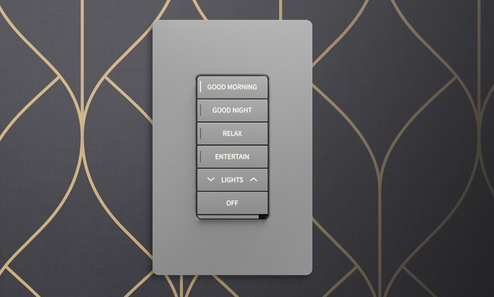
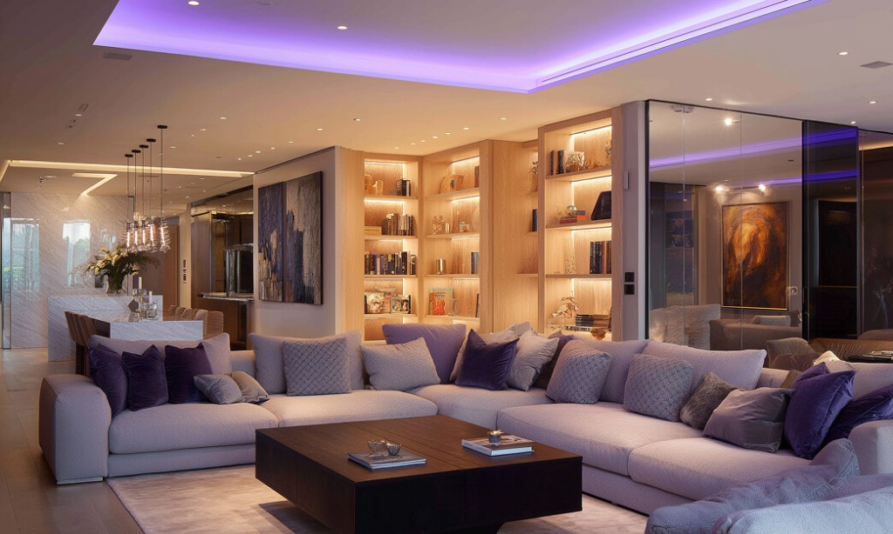
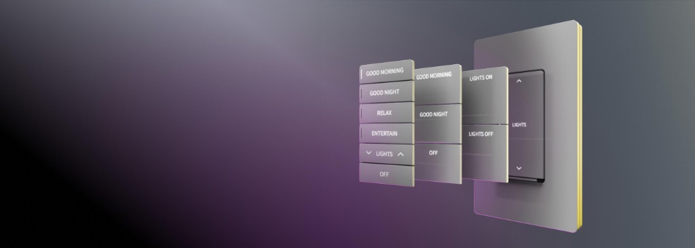
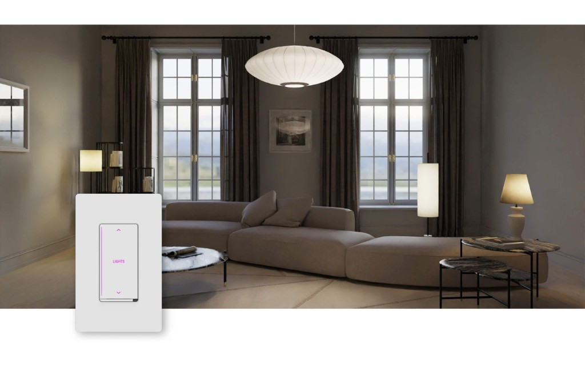

Diseño unificado
Mantené una expresión visual coherente en toda la casa, con el mismo lenguaje de forma, tacto y funcionalidad.

Crestron Home®
Cameo es la línea de keypads y dimmers con la que Crestron lleva el control de iluminación al lenguaje del diseño interior: limpio, intuitivo y personalizable.
Más que un interruptor, Cameo funciona como el punto de contacto entre la persona y la casa inteligente. Desde una sola interfaz de pared podés regular luces, activar escenas, mover cortinas y acceder a funciones integradas de audio, climatización y otros sistemas del hogar.
Su valor está en combinar presencia visual cuidada con flexibilidad real de proyecto: diseño edge-to-edge, acabados smooth o textured, colores base white, grey, almond y black, y opción flush-mount para una integración todavía más discreta. Abajo recorrés su propuesta visual y al final podés probar un personalizador propio de Cameo.
Si buscás un control de iluminación que acompañe interiores sofisticados, Cameo combina diseño y versatilidad: colores ricos, acabados smooth o textured y personalización real, desde grabados a medida hasta distintas configuraciones de botones para cada ambiente.
Mantené una expresión visual coherente en toda la casa, con el mismo lenguaje de forma, tacto y funcionalidad.
Su estética edge-to-edge aprovecha mejor la superficie y ofrece una presencia más limpia sobre la pared.
Se integra con naturalidad en estilos clásicos o contemporáneos, con una lectura atemporal y premium.
Facilita tanto obra nueva como retrofit, para lograr una experiencia consistente en distintos tipos de proyecto.
Comunica estados y acompaña escenas con color dinámico, ajustándose de forma inteligente a la luz ambiente.
Textos, íconos y distribución de teclas para que cada keypad responda al uso real de cada espacio.


Cameo se integra al ambiente con arquitectura sin bisel, perfil limpio y lenguaje visual universal. No busca imponerse como gadget: busca que la pared se vea ordenada, elegante y coherente con la decoración.
Con opciones smooth y textured en white, grey, almond y black, la línea permite resolver distintos estilos sin cambiar de plataforma de control.
Creá tu propia configuración.
Los keypads Cameo pueden configurarse en hasta 137 layouts. Elegí entre tres tipos de botones, definí grabados a medida y combiná hardware cableado o inalámbrico —dimmers, switches y keypads auxiliares— para adaptarlo a cada proyecto.

Personalizá tus keypads Cameo en tiempo real

Smooth / White
Personalizá tus keypads
Color del texto
Tocá cada tecla en la imagen para alternar entre texto apagado y encendido (solo cambia el color del texto).
Elegí una familia de acabado y un color base. La vista previa se actualiza al instante para ayudarte a decidir.

Experiencia diaria
Cameo no está pensado solo para encender o apagar luces. Está pensado para que la tecnología acompañe mejor la forma en que vivís la casa: más comodidad en acciones diarias, más limpieza visual en la pared y más coherencia entre diseño interior y sistema de control.